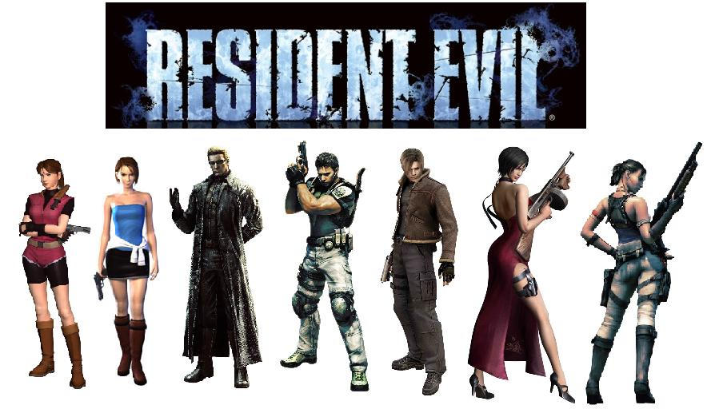

Fun facts about Resident Evil & Images
Resident Evil was first released as a game in 1996 for the PlayStation. Now there are technically around thirty games for the franchise, but I will say there is about ten to fifteen that are considered canon. They continue to make new games for the franchise, even making remastered versions of the older ones and remakes. Not only can you play them on the PlayStation, but you can enjoy them on the Xbox, Nintendo 3DS, Nintendo Switch, Nintendo Wii, and PC. If you want to really immerse yourself into the gameplay, just play it through VR (virtual reality), that will make things more terrifying! Fun fact on that note, is that Resident Evil was the first game to really introduce the survival horror genre to the game world. Resident Evil was influenced by earlier games like Alone in the Dark and Sweet Home.
Not only is Resident Evil a game, but it is also now in the form of movies, board games, books, comics, and manga. There are six live action movies (most will say they are terrible but, I have a soft spot for them since my mother and I would always watch them together. Yes, they are cheesy and would have been better left as their own thing, instead of trying to incorporate so many different aspects of the games into the movies.) In my opinion, the animated movies (there are seven of them) are far better than the live action ones. For the novels there are seven that were done by S.D. Perry, five novelizations of the games and two original stories. If you can't tell, I think it's pretty that if you didn't want to necessarily play the games, you can still learn about the lore and the characters through the books or movies, there is plenty of options for anyone wanting to know more about the Resident Evil community. If you're a hardcore fan of the franchise, you know that the show is not even worth mentioning!
